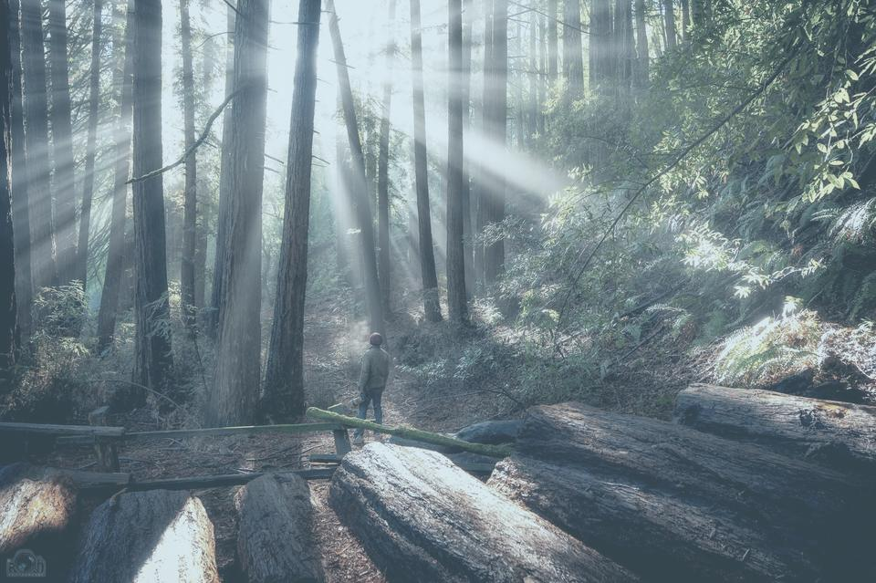

Match Look to a Reference
Give your photo the color and tone of another picture: a photo you admire, a film still, or one of your own edited shots. The result is ordinary sliders you can keep editing.
 Your photo
Your photo
MatchedOpen it
In Develop: Photo › Match Look to Reference… (⇧⌘M). Or right-click photos anywhere › Match Look to Reference…, which opens them in Develop first.
Choose a reference
- Choose File…
- Any image on your Mac: JPEG, PNG, HEIC, TIFF or a RAW. Or drag an image from Finder onto the reference box.
- Recent References
- The last eight references. Only their location and a small thumbnail are kept; a moved file shows as Missing.
- Use a Photo from the Catalog…
- Match one of your own shots, with its current edits. Good for making a set consistent.
Preview, Strength and Show Differences
- The reference is on the left, a live preview of your photo on the right. Press and hold the preview to see it before the match.
- Choose what to match: White Balance (Temp and Tint), Tone (Exposure and the Tone Curve), Color (Saturation, HSL and Color Grading). Protect Skin Tones keeps faces natural (see below).
- Drag Strength (0 to 100) to blend between your current look and the full match.
- Click Show Differences to list every slider that will move, from its current value to the new one.
- Click Apply. Nothing changes on your photo until then; Cancel leaves it exactly as it was.
Apply is one history step (Match Look: name). Everything it sets is an ordinary slider, so you can adjust, undo, copy or save it as a preset. No AI touches the pixels.
- Match: what the match may change. Turn off any of the three to leave those sliders alone.
- Protect Skin Tones: on by itself when Atelier finds a face in your photo.
- Match Areas: Whole Photo, Subject & Background, or Boxes.
- Strength scales everything the match sets, the subject mask's sliders included.
Protect Skin Tones
A strong look, such as teal and orange or a cold film stock, can turn skin orange, green or grey. With Protect Skin Tones on, the skin on the faces Atelier finds is left out of the match, and the match may move its color by only a little (at most 5° of hue and 15% of saturation). The rest of the photo still takes the full look.
Atelier does this with ordinary sliders. It first turns back the HSL Hue and Saturation of the colors skin falls in (Orange, usually), when Color is on. If that isn't enough, it pulls White Balance, Saturation and Color Grading back toward where they were, just as far as needed. Show Differences lists every change.
It turns on by itself when Atelier finds a face in your photo. You can turn it on or off for each match. If no face is found, the dialog says there was no skin to protect.
Match Areas
When the reference shows different things from your photo, choose how they match in the Match Areas pop-up menu:
- Whole Photo
- The whole reference sets the look for the whole photo. This is the default.
- Subject & Background
- Atelier finds the subject (people, animals, objects in front) in both pictures, so there is nothing to draw. The background is matched to the reference's background with the usual sliders. Then a mask named Match Look: Subject (a Select Subject mask) gets its own Temp, Tint, Exposure and Saturation, so your subject matches the reference's subject. You can edit or delete the mask in Masking like any other. Running Match Look again replaces it instead of adding another. If Atelier can't find a subject in either picture, it matches the whole photo and says so.
- Boxes
- A box appears on each image: drag them over the parts that should match (skin to skin, sky to sky) and drag a corner to resize. The boxed areas count most, and the rest of each picture a little, so the whole photo still moves sensibly.
Several photos
With several photos selected in the filmstrip, choose:
- Same settings
- One match, on the open photo, applied to all. Like Sync.
- Match each photo
- Each photo matched on its own, for mixed light. Runs in the background with progress and Cancel in the status bar.